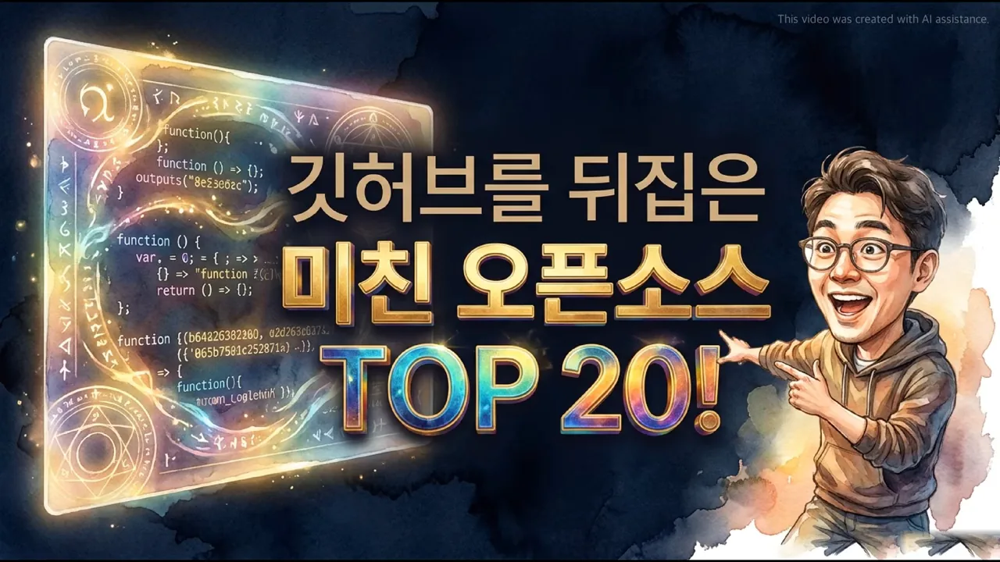
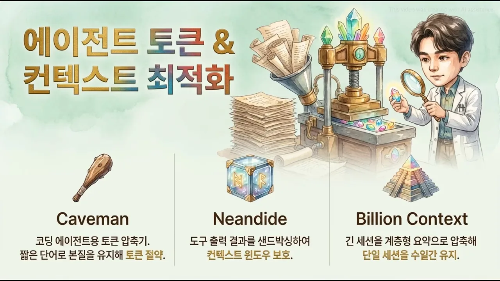
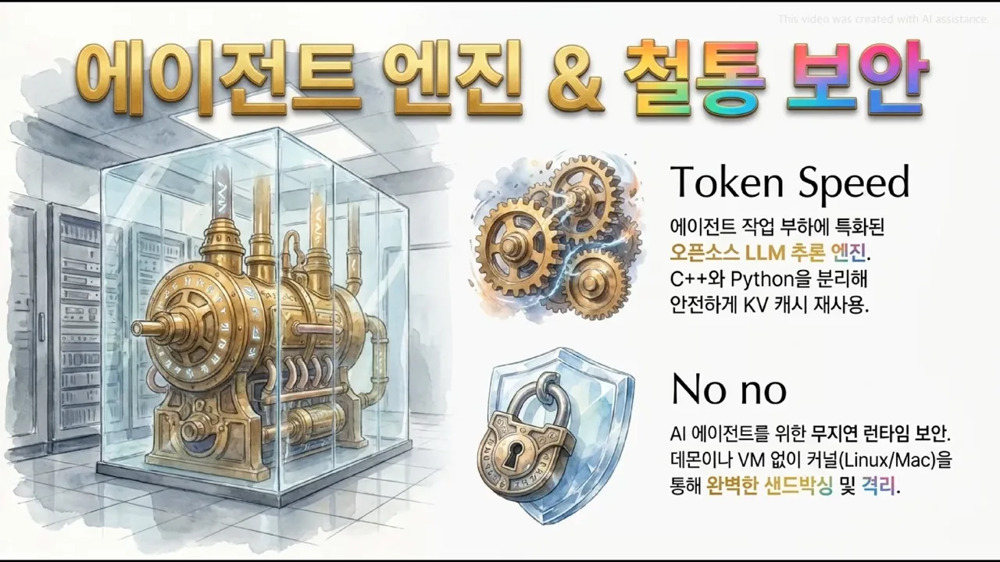
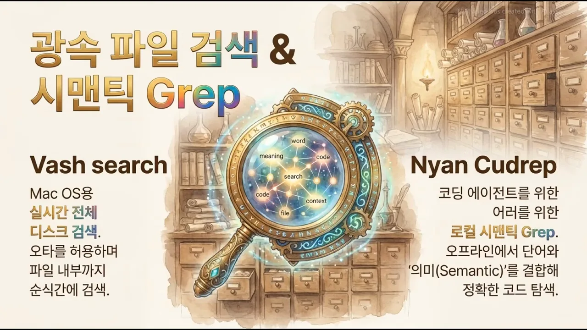
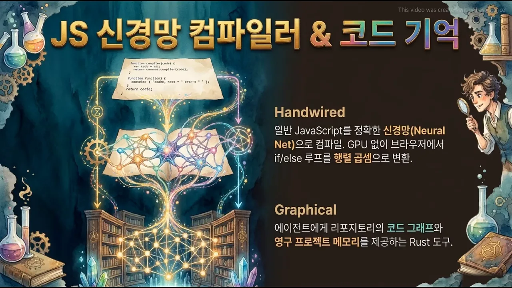
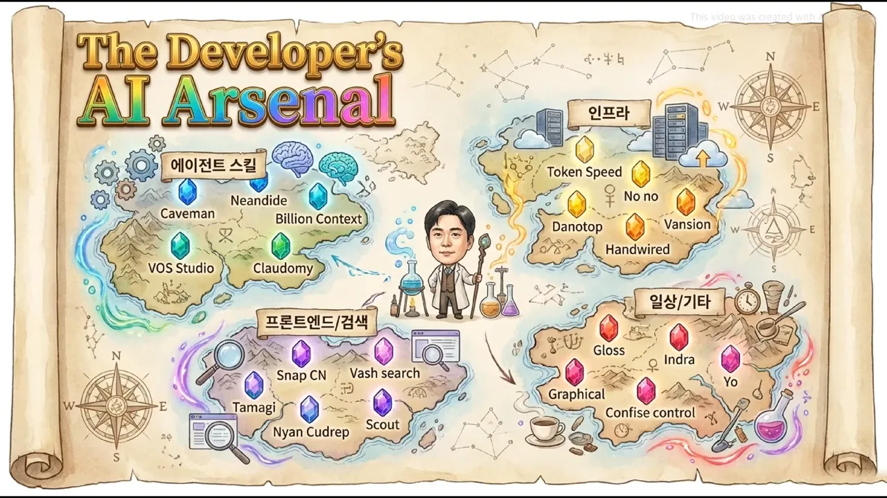

기억력 문제: 토큰과 컨텍스트 줄이기
영상은 '깃허브를 뒤집은 미친 오픈소스 TOP 20'이라는 제목 화면으로 시작해요. 두 진행자는 AI가 데이터 센터와 비싼 구독료의 영역이었다면, 이제는 내 노트북 안에서 독립적으로 돌아가는 오픈소스가 빠르게 늘고 있다고 말해요. 그리고 이 도구들이 톱니바퀴처럼 맞물려 일하는 방식을 하나씩 짚어 가요.

왜 기억력이 첫 번째 벽일까요
AI를 비서로 쓰려면 전에 했던 지시와 대화의 맥락을 계속 기억해야 해요. 그런데 이걸 그대로 다 넣으면 컨텍스트 윈도우가 넘치고 계산 비용이 치솟아요. 한정된 내 컴퓨터 자원 안에서 긴 기억을 어떻게 감당할지가 첫 질문이에요.
첫 슬라이드는 이 문제를 세 도구로 나눠 보여 줘요. 왼쪽 몽둥이 아이콘의 Caveman은 토큰 절약, 가운데 상자 아이콘의 Neandide는 도구 출력 격리, 오른쪽 피라미드 아이콘의 Billion Context는 긴 세션 유지를 맡아요.

Caveman: 문법은 걷고 의미만 남기기
Caveman은 긴 문장을 핵심 단어로 쪼개고 줄여서 모델이 처리할 토큰 수를 크게 줄여요. 그러면 뉘앙스가 사라지지 않을까요? 영상의 답은 사람과 모델이 문장을 읽는 방식이 다르다는 거예요. 사람은 조사와 문법이 있어야 맥락을 잡지만, 모델은 단어들 사이의 의미 관계만 있으면 돼요. 진행자는 이를 짐을 버리는 게 아니라 진공 압축팩에 넣는 것에 비유해요.
Neandide: 바깥 정보는 모래 상자 안에서만
양만큼 질도 문제예요. 에이전트가 외부 사이트나 시스템을 뒤지다 엉뚱한 에러 코드나 악의적인 정보를 가져올 수 있거든요. Neandide는 도구가 돌려준 출력을 본 작업 공간과 분리된 공간에서만 처리해요. 이 샌드박싱 덕분에 오염된 정보가 모델에 바로 들어가 환각을 일으키는 걸 막는다고 해요.
Billion Context: 지난 대화를 층층이 접기
Billion Context는 지난 대화를 그대로 늘어놓지 않고, 모델이 스스로 계층형 요약으로 접어서 저장해요. 그래서 며칠씩 이어지는 작업도 한 세션 안에서 기억이 끊기지 않아요. 진행자의 예로는, 월요일에 지시한 세부 사항을 금요일에도 그대로 이어서 작업할 수 있어요.
로컬 음성과 오디오 강의
똑똑한 기억이 생겨도 답이 글로만 오면 계속 화면을 봐야 해요. 그래서 다음 슬라이드는 목소리로 넘어가요. 왼쪽 마이크 아이콘이 VOS Studio, 오른쪽 펼친 책이 Claudomy예요. 아래 설명에 '11Labs를 대체하는 완전 로컬 오픈소스', '646개 언어', '2분짜리 오디오 강의'가 강조돼 있어요.

VOS Studio: 내 목소리는 내 컴퓨터에만
예전에는 자연스러운 AI 음성을 만들려면 유명한 유료 서비스나 클라우드 API를 꼭 써야 했어요. VOS Studio는 계정도 인터넷 연결도 없이 646개 언어로 음성 복제와 더빙을 한다고 해요. 영상은 굳이 무거운 음성 모델을 PC(Personal Computer)로 들여오는 이유를 프라이버시에서 찾아요. 내 목소리를 복제하거나 사내 기밀 문서를 오디오로 바꿀 때, 그 데이터가 외부 서버로 가는 것 자체가 위험이거든요.
Claudomy: 출처가 붙은 2분 강의
Claudomy는 배우고 싶은 주제를 주면 웹을 검색해서 2분짜리 오디오 강의를 만들어요. 영상이 강조하는 건 검색 결과를 읽어 주는 게 아니라 정보마다 출처를 밝히도록 설계했다는 점이에요. 요약하다 생기는 환각을 막기 위해서예요. 출퇴근길에 나만을 위한 강의를 매일 듣는 셈이라고 정리해요.
빠른 엔진과 가벼운 보안
긴 기억에 음성 합성까지 돌리면서 샌드박스 같은 보안까지 얹으면 노트북이 버틸까요? 영상은 이 질문에 엔진 하나와 보안 도구 하나로 답해요. 슬라이드 위쪽 톱니바퀴가 Token Speed, 아래쪽 방패 자물쇠가 No no예요. 설명에 'C++와 Python을 분리해 안전하게 KV 캐시 재사용', '데몬이나 VM 없이 커널(Linux/Mac)'이라고 적혀 있어요.

Token Speed: 계산한 건 도마 위에 두기
Token Speed는 오픈소스 LLM(Large Language Model) 추론 엔진이에요. 비결은 KV 캐시를 영리하게 다시 쓰는 거예요. 모델이 긴 문장을 처리할 때 앞 단어들의 계산을 매번 처음부터 하면 컴퓨터가 멈춰 버려요. 그래서 한 번 끝난 계산 결과를 요리사가 도마 위에 꺼내 두듯 보관했다가 다음 계산에 다시 써요.
아래 그림의 (a)는 캐시가 없을 때, (b)는 캐시가 있을 때예요. 새 토큰 하나를 만들 때마다 (a)는 앞 토큰을 전부 다시 계산하고, (b)는 새 토큰만 계산해요.
영상은 일을 나누는 방식도 짚어요. 무거운 수학 계산은 빠른 C++에, 유연해야 하는 제어 로직은 Python에 맡겨서 한정된 PC에서도 큰 모델이 버벅이지 않는다고 설명해요. 진행자는 힘센 보조 셰프(C++)와 레시피를 조율하는 메인 셰프(Python)로 비유해요.
No no: 벽을 세우는 대신 권한만 검사하기
보안을 두껍게 하면 느려지는 게 상식이에요. 전통적인 VM은 컴퓨터 안에 가짜 컴퓨터를 하나 더 띄우고 그 안에서 프로그램을 돌리니 무겁고 부팅도 오래 걸려요. No no는 Linux나 Mac의 커널 수준에서 얇은 통제막을 쳐요. 방을 새로 짓지 않고, 프로그램이 실행될 때 어느 영역까지 손댈 수 있는지만 검사해요.
앱 화면과 데모 영상
엔진을 갖췄으니 이제 사람이 만질 화면과, 남에게 보여 줄 데모가 필요해요. 예전에는 iOS 앱, Android 앱, 웹사이트를 따로따로 만들어야 했어요. 슬라이드는 왼쪽의 코드 카드들이 화살표를 타고 오른쪽 두 결과물로 흘러가는 그림이에요. 위쪽 휴대폰과 태블릿이 Tamagi, 아래쪽 영상 편집 화면이 Snap CN이에요.

Tamagi: 통역 없이 미리 번역해 두기
Tamagi는 코드 한 벌로 iOS, Android, 웹에서 함께 돌아가는 React UI(User Interface) 키트예요. 한 번 짜서 여러 곳에서 돌리는 크로스 플랫폼 도구는 예전에도 있었지만 늘 버벅이고 느렸어요. 영상은 그 이유를 실행할 때마다 코드를 운영체제에 맞게 실시간으로 통역하는 무거운 엔진에서 찾아요. Tamagi는 최적화 컴파일러가 미리 번역을 끝내 두니, 중간 통역이 사라져 네이티브급 성능이 나온다고 설명해요.
Snap CN: 데모 영상을 코드로
앱을 잘 만들어도 설득하려면 데모 영상이 필요해요. 화면을 녹화하고 자막을 달고 편집하는 일은 개발자에게 큰 짐이에요. Snap CN은 터미널 창이나 AI 채팅이 돌아가는 장면을 코드 한 줄로 고품질 영상 애니메이션으로 만들어 준다고 해요. 슬라이드에는 'ShadCN CLI로 설치하는 Remotion 비디오 컴포넌트'라고 적혀 있어요.
찾기, 둘러보기, 읽기
엔진을 달고 앱까지 만들어 파일이 쏟아지면 내 컴퓨터가 미로가 돼요. 에이전트가 코드를 고치려 해도 파일이 어디 있는지부터 찾기 어려워요. 슬라이드는 돋보기 양옆에 두 검색 도구를 놓았어요. 왼쪽 Vash search는 'Mac OS용 실시간 전체 디스크 검색', 오른쪽 Nyan Cudrep은 '코딩 에이전트를 위한 로컬 시맨틱 Grep'이에요.

키워드 검색과 시맨틱 검색
Vash search는 오타를 허용하면서 Mac 디스크 전체와 파일 내용까지 순식간에 뒤져요. 영상이 더 무게를 두는 건 Nyan Cudrep의 시맨틱 검색이에요. 둘의 차이는 이렇게 정리할 수 있어요.
| 키워드 검색 | 시맨틱 검색 | |
|---|---|---|
| 무엇으로 찾나요 | 글자 모양이 같은 곳 | 뜻과 맥락이 맞는 곳 |
| 약한 곳 | 철자 하나, 변수 이름 하나만 달라도 못 찾아요 | 표현이 달라도 찾아요 |
| 영상의 비유 | — | '파란 표지의 우울한 프랑스 소설, 주인공이 빵 훔친 거'만 듣고 『레 미제라블』을 찾아 주는 사서 |
이 검색이 오프라인에서 돌아간다는 게 요점이에요. 에이전트가 사람 도움 없이 내 컴퓨터의 방대한 코드를 읽고, 뜻을 파악하고, 필요한 함수를 정확히 꺼내 고칠 수 있게 되거든요. 영상은 이를 에이전트의 '눈'이라고 불러요.
Scout와 Gloss: 웹과 문서로 나가기
일하는 공간은 내 디스크에서 끝나지 않아요. 다음 슬라이드는 위에 Scout, 아래에 Gloss를 두었어요. Scout는 '실제 브라우저를 구동하는 오픈소스 브라우저 에이전트', Gloss는 '여백에 AI 답변을 적어 주는 무료 오픈소스 리더'라고 적혀 있어요.

Scout에 "내일 제주도 가는 가장 싼 표 예매해 줘"라고 말하면, 스스로 브라우저를 열고 스카이스캐너에 들어가 클릭하고 날짜를 입력하고 스크롤까지 해요. 영상은 화면의 버튼과 구조를 보고 직접 커서를 움직인다는 점에 주목해요. 별도 API가 없는 오래된 사이트나 닫힌 사내 시스템에서도 일을 대신할 수 있다는 뜻이거든요.
Gloss는 PDF(Portable Document Format)를 읽다 모르는 줄을 고르면 여백에 출처가 붙은 답을 바로 달아 줘요. 보통은 새 탭을 열어 검색하다가 읽던 글의 맥락을 놓치죠. Gloss는 본문에서 눈을 떼지 않게 해서 집중과 비판적 사고를 지켜 준다는 게 영상의 설명이에요.
브라우저 신경망, 코드 지도, OCR, 스마트홈
Scout처럼 브라우저에서 화면을 보고 판단하려면 계산이 많이 들어요. 보통은 비싼 GPU가 달린 컴퓨터에서나 될 일이죠. 영상은 이 벽을 깬 기술로 Handwired를 꺼내요. 슬라이드 위쪽 종이에 적힌 코드가 아래의 빛나는 연결망으로 바뀌는 그림이고, 오른쪽에 Handwired와 Graphical 설명이 있어요.

Handwired: 조건문을 행렬 곱셈으로
Handwired는 평범한 JavaScript를 정확한 신경망으로 컴파일해요. 복잡한 GPU 환경이나 Python 프레임워크 없이, 코드 속 if/else 조건문과 루프를 행렬 곱셈으로 바꿔 처리해요. 진행자의 비유가 이 차이를 잘 보여 줘요.
Graphical: 코드 전체의 지도
Graphical은 에이전트에게 저장소 전체의 코드 그래프와 영구 프로젝트 메모리를 주는 Rust 도구예요. 그러면 에이전트가 코드 한 줄을 고칠 때, 그 변경이 시스템의 다른 어디에 영향을 주는지 지도를 보며 알 수 있어요. 영상은 이걸 심부름꾼에서 큰 그림을 아는 동료로 올라서는 단계라고 표현해요.
Indra와 Confise control: 현실 세계로
여기서부터는 디지털 세계를 벗어나요. 슬라이드 위쪽은 Indra, 아래쪽은 Confise control이에요. 왼쪽 스탠드와 에어컨에서 나온 빛줄기가 오른쪽 화면 속 같은 스탠드와 에어컨으로 이어져 있어요. 화면 속 기기를 누르면 실제 기기가 움직인다는 뜻이에요.

Indra는 무거운 프레임워크 없이 CPU(Central Processing Unit)만으로 스캔이나 PDF를 Markdown과 JSON(JavaScript Object Notation)으로 바꾸는 OCR(Optical Character Recognition) 엔진이에요. 영상은 왜 하필 그 두 형식인지를 짚어요. 스캔 이미지는 사람 눈에만 글씨고, 컴퓨터에게는 색이 칠해진 픽셀 덩어리예요. 에이전트가 읽고 쓰려면 구조가 분명한 JSON이나 깔끔한 텍스트인 Markdown으로 바꿔 줘야 해요.
Confise control은 집 안을 Mac과 iPhone의 3D 모델로 똑같이 만들어 둬요. 화면 속 책상 조명을 누르면 진짜 스탠드가 꺼지는 식이에요. 핵심은 외부 서버 없이 로컬로 돈다는 점이에요. 대기업 스마트홈 기기는 언제 불을 끄고 에어컨을 켜는지 같은 생활 패턴을 클라우드로 보내지만, 이 도구는 그 데이터를 집 안에 둬요.
에이전트끼리 대화하는 망
마지막 단계는 내 노트북의 에이전트가 다른 기기나 클라우드에 있는 에이전트와 직접 대화하는 거예요. 슬라이드는 여러 모니터 속 로봇들이 투명한 파이프로 이어지고, 가운데 인물이 밸브를 돌리는 그림이에요. 파이프 안에는 편지와 상자가 오가고, 아래에 'Yo'라는 이름과 설명이 있어요.

Yo: 중앙 서버 없이 일을 넘겨주기
Yo는 중앙 서버나 계정 관리 없이 Tailscale 망으로 에이전트들을 직접 이어요. Tailscale은 복잡한 설정 없이 기기들을 안전한 VPN(Virtual Private Network)으로 묶어 주는 기술이에요. 그래서 데이터를 가로채거나 허락을 받아야 하는 중앙 서버 없이, 두 에이전트가 암호화된 터널로 일대일 대화를 해요. 진행자가 그린 장면을 순서대로 놓으면 이래요.
sequenceDiagram participant N as 노트북 에이전트 participant T as Tailscale 망 participant C as 클라우드 에이전트 Note over N: 새벽에 로컬에서 데이터 분석·정리 N->>T: 구조화된 데이터 파일 T->>C: 암호화된 터널로 그대로 전달 N->>C: 여기까지 정리했으니 아침까지 렌더링 끝내 놔 Note over C: 렌더링 작업 마무리
영상이 그린 전체 지도
영상은 마지막에 'The Developer's AI Arsenal'이라는 지도로 도구를 네 섬에 나눠 보여 줘요. 왼쪽 위 '에이전트 스킬', 오른쪽 위 '인프라', 왼쪽 아래 '프론트엔드/검색', 오른쪽 아래 '일상/기타'예요. 인프라 섬의 Danotop과 Vansion은 본문에서 한 번도 설명하지 않았어요. 챕터 목록의 '멀티 에이전트 협업 및 시니어 엔지니어링 스킬'(08:03–08:08)이 5초뿐인 걸 보면, 이 둘을 다룰 부분이 빠진 것으로 보여요.

지도를 표로 옮기면 이래요. 한 줄 설명은 영상이 말한 내용만 적었어요.
| 지도의 섬 | 화면 이름 | 영상이 말한 역할 |
|---|---|---|
| 에이전트 스킬 | Caveman | 문법을 걷어 내 토큰 절약 |
| 에이전트 스킬 | Neandide | 도구 출력을 샌드박스로 격리 |
| 에이전트 스킬 | Billion Context | 계층형 요약으로 며칠짜리 세션 유지 |
| 에이전트 스킬 | VOS Studio | 646개 언어 로컬 음성 복제·더빙 |
| 에이전트 스킬 | Claudomy | 출처가 붙은 2분 오디오 강의 |
| 인프라 | Token Speed | KV 캐시를 다시 쓰는 추론 엔진 |
| 인프라 | No no | 커널 수준 무지연 샌드박스 |
| 인프라 | Handwired | JavaScript를 신경망으로 컴파일 |
| 인프라 | Danotop · Vansion | 설명 없음 |
| 프론트엔드/검색 | Tamagi | 코드 한 벌로 iOS·Android·웹 |
| 프론트엔드/검색 | Snap CN | 코드로 만드는 데모 영상 |
| 프론트엔드/검색 | Vash search | 오타 허용 Mac 전체 디스크 검색 |
| 프론트엔드/검색 | Nyan Cudrep | 오프라인 시맨틱 grep |
| 프론트엔드/검색 | Scout | 실제 브라우저를 조작하는 에이전트 |
| 일상/기타 | Gloss | 여백에 출처 달린 답을 적는 리더 |
| 일상/기타 | Graphical | 코드 그래프와 영구 메모리 |
| 일상/기타 | Indra | CPU만으로 도는 OCR |
| 일상/기타 | Confise control | 3D 모델로 집 안 기기 제어 |
| 일상/기타 | Yo | Tailscale 망 위 에이전트끼리 대화 |
영상은 이 흐름을 '인간이라는 가장 큰 병목을 걷어 낸 기계 자율의 시작'으로 정리해요. 그리고 사람의 눈이 닿지 않는 곳에서 에이전트끼리 일을 키워 가는 '그림자 인터넷'이 생기는 건 아닐까 하는 질문을 남기고 끝나요.
오늘 살펴본 이 수많은 도구들 중 여러분의 지식 습득 방식이나 업무 효율을 당장 내일 아침부터 완전히 바꿔 놓을 단 하나의 도구는 무엇인가요?
— 영상 17:55